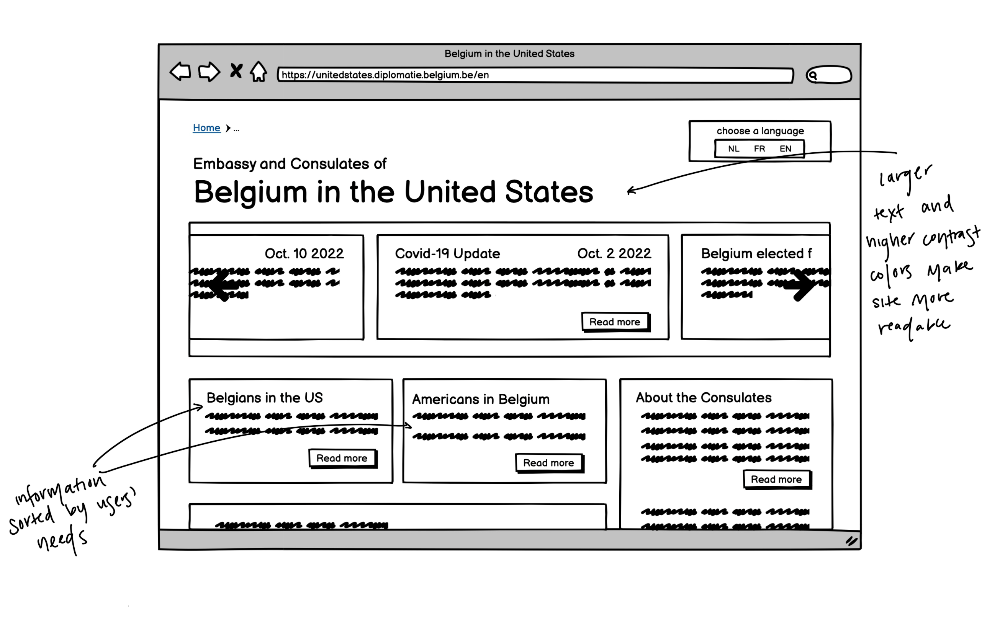
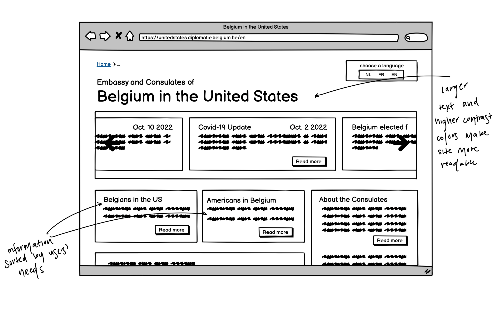
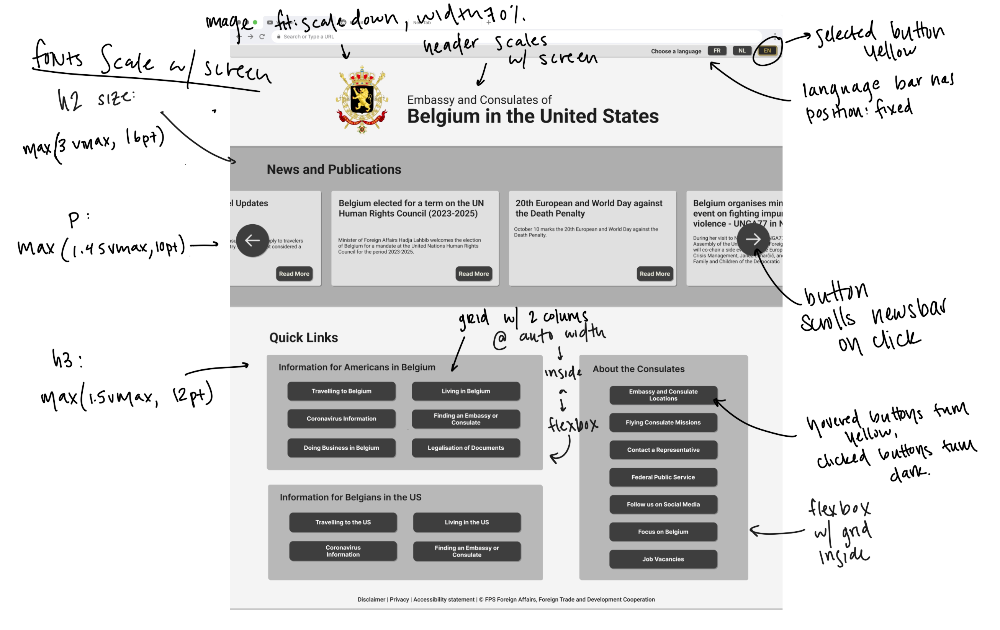
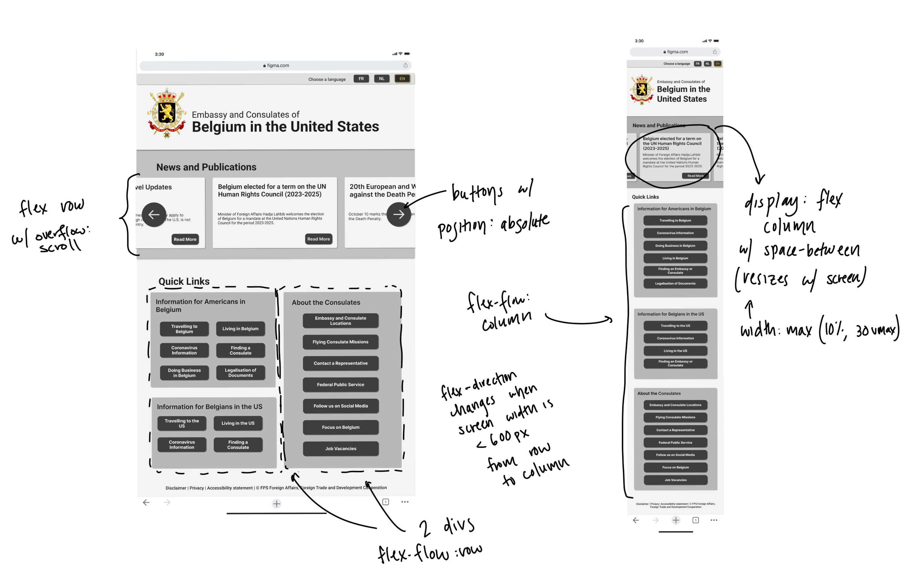

Responsive Redesign:
The Belgian-American Embassy
This project addresses the website for the Belgian Embassy and Consulates in the United States. The current website is disorganized and difficult to view on a mobile device. As an exercise in responsive, scalable design, I reimagined the page to be more accessible.
The Original Site
Accessibility
There are several fundamental issues with this site which make it inaccessible to the target users:
The Redesign
Low-Fi Prototyping
These prototypes block out how the layout will change with different screen sizes
 

Style Guide
The style guide outlines major visual design choices for the main colors, typography, and reusable components’ different states.

Hi-Fi Prototyping
These protoypes flesh out the feel of the website.
 The site
The final design is a dummy page made using html and css which is displayed in a more accessible way and can responsively adapt to screen resizing.